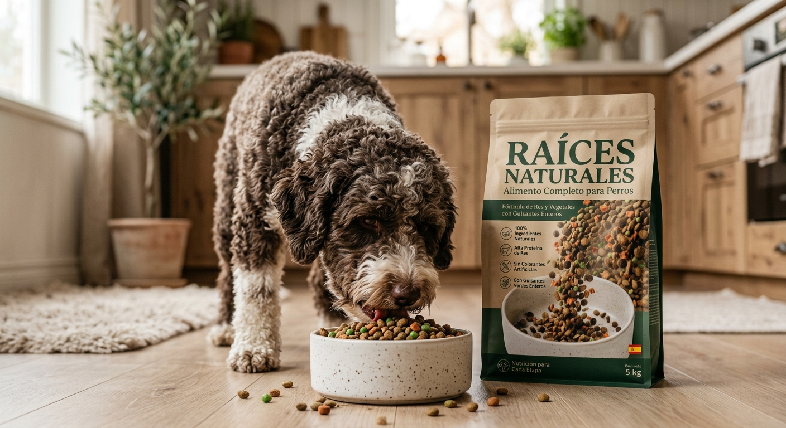

Origen verificado
Cada componente de nuestras recetas posee trazabilidad absoluta, desde su fuente original hasta el plato.

Alimento natural para perros
Ingredientes de origen verificado y formulación clínica para acompañar cada etapa de su vida.
La Materia Esencial
La alimentación de un perro ha estado dominada por la opacidad industrial. Proponemos otra vía: ingredientes puros, ciencia biológica transparente y un respeto absoluto por la vida que nos acompaña.
Menos ruido. Mayor sustancia.
Ejes fundamentales
Cada componente de nuestras recetas posee trazabilidad absoluta, desde su fuente original hasta el plato.
Desarrollado junto a especialistas en nutrición veterinaria, priorizando la biodisponibilidad y la salud a largo plazo.
Cero conservantes sintéticos, subproductos o procesos desnaturalizantes. Únicamente materia viva.
Colección

Res de pastoreo con vegetales de hoja orgánica para sostener la masa magra y la densidad energética.
Ver fórmula →
Proteína novel de cordero de libre pastoreo con calabaza orgánica, para sistemas digestivos sensibles.
Ver fórmula →
Captura salvaje de pescado blanco con microalgas marinas, rica en ácidos grasos esenciales.
Ver fórmula →
El estudio
«La alimentación de un perro no es un problema logístico, sino un acto diario de cuidado profundo.»
Trabajamos en la intersección entre la ciencia veterinaria rigurosa y el diseño minimalista, entendiendo que la elegancia verdadera reside en la simplicidad de lo genuino.
Configuración nutricional